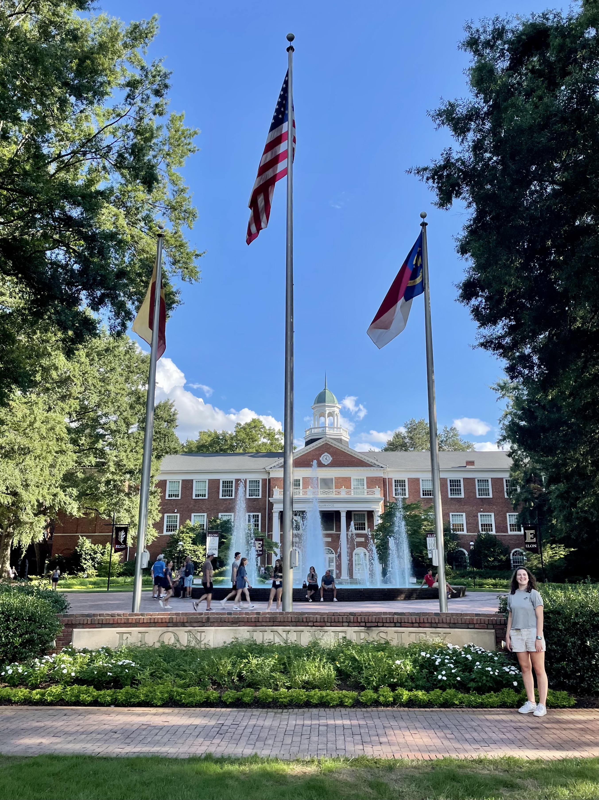
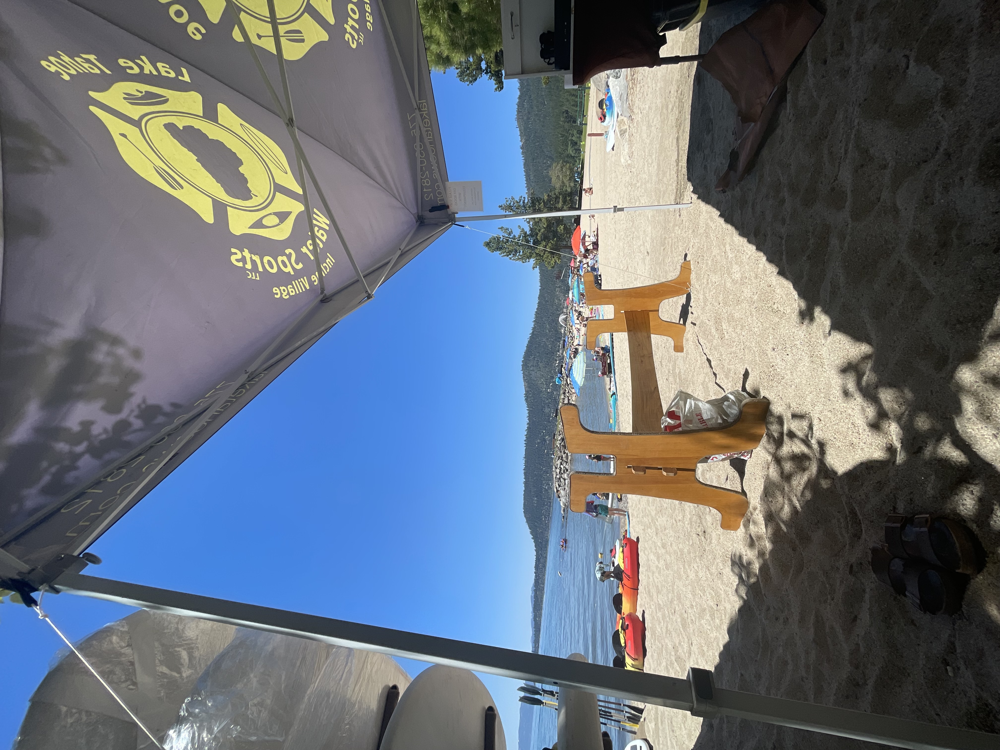
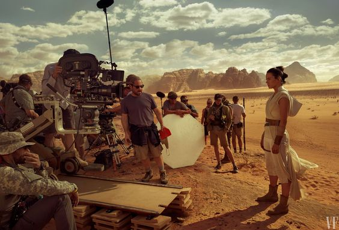
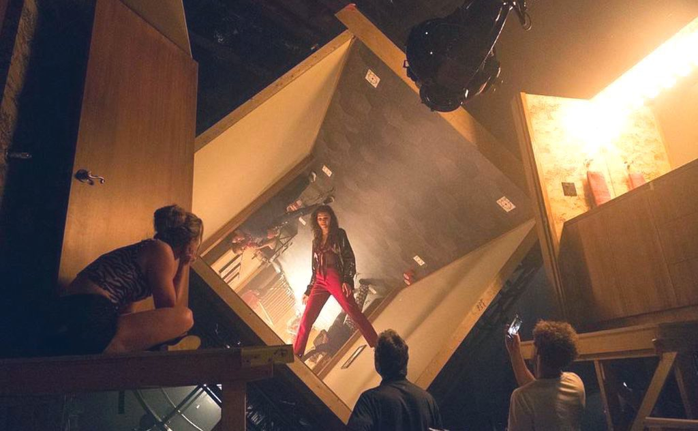

Education
I graduated high school in Reno in 2021 with an honors diploma and a 4.58 gpa.
Throughout my high school career I took 6 Adavanced Placement courses including Spanish, US Government, Environment, Language and Composition, US History, and Human Geography.
At Elon University I am majoring in Cinema and Television Arts and double minoring in Photography and Leadership Studies.
I plan on applying to Elon in L.A. and going for summer 2023 where I will be interning for company and taking a class.
I also plan on studying abroad my junior year, hopefully in Australia!

Work Experience
I have had two jobs in the past. From June 2020 to March 2021 (my senior year of highschool) I worked at Urban Air Trampoline Park.
I was a team member and eventually promoted to shift lead where i had to monitor other employees each shift, train new employees, and
gave employees their breaks.
My second and most recent was this past summer, June 2022 - August 2022,
in which I worked at Incline Beach at Lake Tahoe. I worked for a company that did kayak and paddle board rentals,
My technical title was Watersports Attendant. This experience was a lot of fun and gave me the oppurtunity to
put my people skills to the test.

Future Career
In the future, post-grad, I would like to be working on film or television production in Los Angeles California.
I am undecided on the specific job I want to pursue but what I do know for sure is that
my dream is to have my name in the credits of a work of movie picture.
I was inspired to pursue this career by watching Star Wars and behind the scenes clips of the making of it.
Seeing how they did it is unbelievable and the thought of working on a project like that excites me.
I am also very inspired by Sam Levinson's Euphoria, his direction throughout the show is absolutely jaw dropping.
He not only created a fantastic show but a work of art through the use of light, camera work, and interesting shots.

